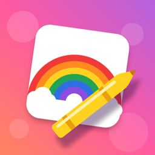

DrawinPinta y colorea sin anunciosSoporte
¿Tienes una duda o algo no funciona? Escríbenos a abdiaslaguna@wesyncro.cl y te respondemos lo antes posible.
Preguntas frecuentes
¿Cómo recupero Drawin Premium en otro dispositivo?
Abre la Zona de padres (el candado de la pantalla principal), resuelve la pregunta para adultos y toca «Restaurar compras». Usa la misma cuenta de Apple con la que compraste. Si tienes «Compartir en familia» activado, también funciona en los dispositivos de tu familia.
¿Premium es una suscripción?
No. Es un pago único: se paga una vez y queda desbloqueado para siempre.
¿Dónde se guardan los dibujos?
Solo en el dispositivo. Cada dibujo se guarda solo mientras pintas y se puede retomar desde la lista de dibujos. Si borras la app, se borran también los dibujos.
¿Cómo cambio la edad o el nivel de detalle?
En la Zona de padres puedes cambiar la edad; los dibujos se ajustan con más o menos detalle.
¿Drawin tiene anuncios o recoge datos?
No. No tiene anuncios ni rastreo y no pide datos personales. Lee la política de privacidad.
Support
Questions or problems? Email abdiaslaguna@wesyncro.cl.
Restore Premium: open the Parents area (the lock on the home screen), answer the grown-up question and tap “Restore purchases” with the same Apple Account. Family Sharing is supported.
Is Premium a subscription? No — it’s a one-time purchase.
Where are drawings saved? Only on the device. They save automatically while painting.
Ads or data collection? None. See the privacy policy.